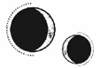

CAPÍTULO 25
Febre 1786
Se decidió que el punto elegido para sus encuentros sería el Reducto, un complejo situado en el río, justo debajo de la presa, al norte del Cuartel General. La enorme estructura estaba construida sobre unos descomunales pilares que evitaban que sufriera daños en caso de inundación, pero que le permitían estar lo bastante cerca del agua como para beneficiarse de la hidroelectricidad generada por la presa.
Las fábricas de la zona habían cerrado a causa de la guerra, pero el Reducto había sido asediado por ambos bandos durante los primeros meses de conflicto, cuando intentaron hacerse con el control del complejo y así asegurar un posible puesto de fabricación de armas. Sin embargo, los daños causados fueron tales que el complejo acabó declarándose inservible. Una vez en ruinas, dejó de considerarse un punto lo bastante estratégico como para que supusiera una prioridad y, dado que continuar disputándose el territorio podía poner en riesgo la integridad de la presa, ambos bandos decidieron abandonarlo.
Al fin y al cabo, no le convenía a nadie que Paladia se quedara sin electricidad o que los ciudadanos acabaran con el agua hasta la cintura.
Para Helena, incluso antes de la guerra, el Reducto había sido uno de los lugares más horrendos que había visto nunca, pues era como una brutal mancha negra que alteraba el equilibrio del paisaje. Por si fuera poco, cuando todavía estaba en funcionamiento, el complejo contaminó los cielos con su humo negro y, además, envenenó las aguas y salpicó con una desagradable sustancia viscosa el humedal que se inundaba junto a los suburbios sumergidos y los distritos bajos durante la fase de sublimación.
Por eso siempre había evitado la zona.
A última hora de la tarde del día en que se encontraría con Ferron por primera vez, se quitó el uniforme y dejó todas sus posesiones guardadas con mimo en su arcón, incluido el amuleto de heliolita. No había vuelto a ponérselo desde la reunión que había tenido con Ilva y Crowther, pues se le revolvía el estómago solo de verlo.
Se vistió con las ropas de civil menos llamativas que fue capaz de encontrar, de manera que nadie se fijara en ella, y se tapó la cabeza con la capucha para ocultar lo oscura que era su melena. Sería una ciudadana cualquiera intentando mantenerse alejada del conflicto. Los inmarcesibles no solían molestar a los civiles, dado que preferían convertir en necrómatas a los soldados de la Resistencia para no tener que tomarse la molestia de entrenarlos y armarlos.
El paseo hasta el Reducto era relativamente sencillo. Solo tenía que caminar en dirección norte desde el Cuartel General y cruzar el puente que comunicaba con el continente. Además, como el extremo norte de la isla estaba asentado sobre una meseta, no se vería obligada a moverse entre los distintos niveles de la ciudad. El portón de entrada estaba cerrado, y los guardas que vigilaban la puerta peatonal comprobaron los permisos y la identificación que Crowther le había preparado antes de dejarla pasar.
El río arrastraba el agua que las tormentas habían descargado sobre las montañas, aunque no bajaba tan revuelto como durante la época de las crecidas.
Una vez que hubo salido de la isla, siguió la carretera que conducía hasta la presa y cruzó un segundo puente para llegar al Reducto, donde, para su sorpresa, había un buen puñado de gente. Dado que los edificios estaban abandonados, muchos de los ciudadanos más pobres y sin poderes alquímicos habían huido hasta allí por miedo a verse obligados a unirse a cualquiera de los bandos combatientes. El Reducto era el único lugar excluido del campo de batalla donde podían pasar el invierno sin enfrentarse al frío inclemente de las montañas.
El complejo era una mezcla entre un laberinto y una ciudad, pero sus altísimos muros de metal y cemento hacían que resultara claustrofóbico. Las fábricas habían sufrido todo tipo de sabotajes que solo habían sido posibles gracias a la alquimia, como extrañas transmutaciones y alquimizaciones pensadas para destruir la maquinaria más compleja. Sin embargo, el edificio de apartamentos donde vivía la mayor parte de los desplazados se mantenía en mejores condiciones. Según le habían dicho, lo identificaría gracias al símbolo alquímico del hierro que había en el mosaico decorativo de la entrada.
Helena entró tratando de simular que sabía adónde iba.
El tragaluz que antaño había decorado el techo ahora estaba hecho añicos en el suelo y solo unos pocos módulos tenían puertas todavía. Segundo piso, cuarta puerta a la izquierda. Habían raspado el número que identificaba el módulo hasta dejarlo ilegible.
La chica se quitó los guantes y llamó con firmeza, pero intentando no hacer demasiado ruido.
Como no obtuvo respuesta, hizo una pausa y volvió a comprobar el mapa. Quizá había llegado demasiado pronto.
Tendría que esperar. Se quedó allí de pie esforzándose por parecer tranquila mientras el corazón amenazaba con salírsele del pecho.
Entonces la puerta se abrió sin previo aviso y la luz de un farol eléctrico iluminó el pasillo. Kaine Ferron apareció ante el umbral con el mismo aspecto que en el retrato del periódico, como si para él no hubiera pasado el tiempo. Como si no hubiese envejecido nada en aquellos cinco años.
Ni siquiera aparentaba tener diecisiete años. Todavía mostraba ese aire desgarbado que caracterizaba a los chicos después de pegar el estirón, pero antes de que su figura se transformara en la de un hombre adulto. Incluso iba peinado igual que cuando estudiaba, como si hubiera emergido del pasado.
Llevaba un traje de color gris piedra que casi hacía juego con el tono gris verdoso de sus ojos. Era el uniforme de los miembros de rango medio alto de los inmarcesibles. Cuanto más alto era su rango, más oscuro era su atuendo. Por eso los generales iban siempre vestidos de negro.
El chico de rostro extrañamente aniñado la miró con languidez.
Las circunstancias ya eran de por sí terribles, pero, por algún motivo, nada la había impactado tanto como descubrir que Ferron conservaba una apariencia tan juvenil.
Se lo quedó mirando hasta que este por fin se hizo a un lado y abrió la puerta a modo de invitación, aunque dejó el espacio justo para que Helena tuviera que pasar rozándolo.
El corazón estaba a punto de salírsele por la boca cuando entró. Al cruzar el umbral, se debatió entre estudiar cada rincón del módulo o dejarse llevar por el miedo que le impedía apartar la vista de Ferron.
Al final, aprovechó el breve instante que tardó en darse la vuelta para recorrer la estancia con la mirada, intentando fijarse en el mayor número de detalles. El módulo era sencillo y estaba prácticamente vacío: se trataba de una habitación con las paredes sucias y las baldosas del suelo agrietadas, que contaba solo con una mesa de madera y dos sillas. Al ver que no había ni una cama ni un sofá, no supo si debería sentirse aliviada o aterrorizada.
Su cuerpo amenazaba con echarse a temblar descontroladamente. El movimiento de la sangre le llegaba con tanta violencia a los oídos que apenas registró el sonido de la puerta al cerrarse.
Al encontrarse frente a él, trató de imitar la lánguida indiferencia de Ferron para no denotar lo asustada que estaba en realidad. El chico apenas rozó la superficie de la puerta, pero Helena supo que acababa de encerrarla cuando captó el leve ruido de un mecanismo, seguido del chasquido de la cerradura.
—Según tengo entendido, quieres ayudar a la Resistencia —le dijo cuando se volvió para mirarla.
Oía su propia voz como si viniera de muy lejos. Su mente trabajaba a toda velocidad, anticipándose a lo que pudiera pasar.
¿A cuántas personas había matado? Estaba claro que formaba parte de los inmarcesibles desde hacía años. ¿Cuántos necrómatas tenía bajo su mando? ¿Por qué había pedido verla a ella? ¿Por qué la querría? Si le hacía daño, ¿le daría tiempo a curarse antes de que dieran el toque de queda o tendría que pasar la noche atrapada en el Reducto?
Las preguntas se le agolpaban en la cabeza mientras el miedo correteaba por sus venas como un parásito. Lo notaba en los huesos, buscando la más mínima brecha en su determinación para hacerse un hueco en su interior.
—¿Estás al tanto de mis condiciones? —le preguntó mientras la estudiaba con la cabeza ladeada.
Helena encontró su mirada y se dio cuenta de que, si bien su rostro mostraba un engañoso aire juvenil, sus ojos lo delataban.
—A cambio de recabar información para la Llama Eterna, quieres un indulto. Me quieres a mí.
—Ahora y para siempre, sin importar cuándo acabe la guerra —dijo con un brillo intenso en la mirada.
Helena no se permitió mostrar reacción alguna. Después de pasar años en el hospital, había aprendido a dejar sus sentimientos a un lado para cumplir con su deber.
—Sí —dijo impasible—. Soy tuya.
Aunque Ferron fuera dueño de su cuerpo, ella seguía teniendo el control de su mente y sus sentimientos. Si quería acceder también a ellos, tendría que esforzarse mucho más.
«Acércate, Ferron. Quiero que te obsesiones tanto con mis puntos débiles que no te percates de los que yo voy a introducir en tu interior».
Entonces el chico sonrió y, al hacerlo, su verdadera edad se reflejó de pronto en su rostro. No porque sus facciones envejecieran de un momento a otro, sino porque una malicia enconada, indudablemente por el paso del tiempo, borró por un instante esa fachada de juventud tras la que se escondía.
—¿Me lo prometes? —preguntó.
—Si eso es lo que quieres.
Otra rápida sonrisa cruzó su rostro como una guadaña que buscaba más hacer daño que demostrar una emoción sincera.
—Entonces, júramelo. En voz alta.
Helena se llevó una mano al corazón sin darse la oportunidad de pensárselo.
—Lo juro por mi alma y por el espíritu de los cinco dioses, Kaine Ferron. Seré tuya hasta que exhale mi último aliento.
No fue hasta que hubo pronunciado aquellas palabras en voz alta que recordó todo lo que había jurado en su vida. Todas las promesas contradictorias que había hecho. Tendría que encontrar una manera de reconciliarlas.
Satisfecho, Ferron se acercó a ella.
Un brillo de curiosidad iluminaba sus ojos, como si fuera un lobo acechando a su presa.
—Hasta que no hayamos ganado la guerra, no podrás hacerme nada que interfiera con… con el resto de mis responsabilidades en la Resistencia —farfulló antes de que pudiera tocarla—. Tengo que poder volver sin… sin llamar la atención.
Ferron se detuvo y enarcó una ceja.
—Ya…, pues tendré que mantenerte con vida hasta que todo esto acabe —suspiró—. Supongo que nos servirá de aliciente para seguir adelante. —Se inclinó hacia ella y acercó su rostro al suyo—. Nos guardaremos lo mejor para el final.
—Quiero que tú también lo jures —insistió ella con voz temblorosa.
Ferron se apoyó la mano sobre el lugar que debería ocupar su corazón, aunque la chica no estaba segura de que los inmarcesibles tuvieran uno.
—Lo juro —empezó utilizando un exagerado tono reverencial y haciéndole cosquillas en el cuello a Helena con su aliento—. Por los dioses y por mi alma —continuó con una risita—, juro que no interferiré.
La chica echó la cabeza hacia atrás y lo miró con suspicacia por lo fácil que había resultado hacer que cooperara. Sabía que le acababa de ofrecer una promesa vacía, pero ¿por qué le seguía el juego? Ferron dominaba la situación y, en vez de aprovechar esa ventaja, actuaba como si el acuerdo al que habían llegado fuera mutuo.
Al ver cómo lo escudriñaba, Ferron cuadró los hombros y dio una vuelta alrededor de la joven, chasqueando la lengua cuando ella hizo todo lo posible por mantenerlo en su campo de visión. Un brillo divertido le iluminaba la mirada.
—Vaya, vaya, no te fías de mí, ¿eh? Deja que adivine lo que estás pensando. Crees que os estoy tendiendo una trampa y que cambiaré de opinión en cuanto haya conseguido lo que quiero.
Helena se quedó helada.
—Sí, eso es exactamente lo que piensas. —Se detuvo en seco—. ¿Y si hacemos algo? Como muestra de mi… buena voluntad, te prometo que no te tocaré. De momento. —Le recorrió el cuerpo con una mirada perezosa—. Al fin y al cabo, dejé muy claro que quería que accedieras a ser mía libremente. Y, ahora mismo, no pareces muy contenta de estar aquí.
Aunque sus palabras deberían haberla tranquilizado, se sintió horrorizada ante la propuesta. Aquello no era lo que ella quería. Se suponía que la misión debía comenzar de inmediato y, cuanto más tardaran en ponerla en marcha, más probabilidades había de que Ferron perdiera el interés antes de que ella tuviese oportunidad de manipularlo. La cuestión era que no sabía cómo responder sin dejar claras sus intenciones.
Consciente, al parecer, de la incomodidad que le había causado la oferta, Ferron le ofreció un lento asentimiento y una sonrisa voraz.
—Voy a seguir dándote la información que tu querida Llama Eterna precisa, solo que, por el momento, encontraré otras formas de disfrutar de tu compañía.
Si ya era mala la idea de permitir que hiciera con ella lo que le viniera en gana, el miedo que la embargaba al verse obligada a permanecer en vilo era mucho peor.
Escondió una mano detrás de la espalda y apretó el puño con fuerza para clavarse las uñas en la palma. Los cortes ya casi curados empezaron a dolerle y amenazaron con volver a abrirse.
—Qué… generoso por tu parte —dijo con la esperanza de mostrar docilidad.
—Sí, muy generoso. Sin embargo, creo que lo mínimo es que tú también me des algo a cambio. —De pronto, adoptó una expresión calculadora, acompañada de una sonrisa viperina—. Al fin y al cabo, yo ya he tenido que ofrecerle a la Llama Eterna una información muy valiosa para ganarme tu colaboración. ¿No crees que merezco una recompensa? ¿Algo con lo que calentar este frío corazón?
A Helena se le cayó el alma a los pies y sintió que perdía el equilibrio.
—¿Qué… qué quieres? —preguntó tensa.
Trató de averiguar qué le pediría, aunque acabó hundida mentalmente bajo toda una avalancha de posibilidades. Odiaba pensar en el concepto que los hombres tenían de un favor.
—No parece que la idea te entusiasme mucho.
Ferron esbozó una fingida expresión de lástima e hizo un mohín que le dio un aspecto tan aniñado que Helena se sintió tentada de dar un paso atrás.
—¿Qué quieres que haga? —insistió apretando los dientes—. Dímelo y lo haré.
—Por Dios, Marino. —Profirió una seca carcajada—. Sí que estás desesperada.
—Estoy aquí, ¿no? Creo que eso ya lo había dejado muy claro —le espetó con tono apagado, incapaz de mirarlo ya a la cara.
—Bueno, como se ve que tu creatividad a la hora de mostrar gratitud es nula, propongo que me des un beso bien cargado de sentimiento —sentenció. Luego, como si se lo hubiera pensado mejor, añadió—: Decidiré cuánta información proporcionarte dependiendo de lo bien que lo hagas.
¿Un beso? ¿Solo quería un beso? La situación era menos desagradable de lo que había esperado, pero la verdad era que prefería mantener las distancias.
Estaba claro que intentaba provocarla. Desde que la chica había llamado a la puerta, no había hecho más que mantenerla en vilo.
Lo del beso era solo la guinda del pastel. Quería ponerla completamente en evidencia, reforzar el rencor que Helena le guardaba y hacerle creer que le estaba ahorrando una mayor humillación al mostrarle clemencia. Ferron esperaba que lo odiara, esperaba que sus sentimientos la mantuvieran distraída para que le resultara más fácil manipularla y hacerla sentir desgraciada.
Se trataba de un juego, nada era real. Helena no pasaba de ser una distracción para él, algo que incluir en su lista de condiciones para confundir a la Llama Eterna. No formaba parte de su verdadero plan.
Más le valía tenerlo en mente.
Dio un paso hacia él.
Las uñas perfectas, el rostro eternamente joven, cada detalle que conformaba la fachada de meticulosa serenidad de Ferron estaba pensado para esconder el monstruo que acechaba bajo su piel.
Se le contrajeron las pupilas. Un opaco desinterés se adueñó de su mirada.
Helena concentró su resonancia hasta que la notó vibrar en la yema de los dedos y la volvió maleable como los hilos de una telaraña.
Era demasiado pronto para manipularlo, pero un beso le daría la oportunidad de tocarlo, de descubrir cómo era y, ante todo, qué sentía por ella. Le proporcionaría un punto de partida.
No se permitió tocarlo con las manos desnudas nada más rodearle el cuello con los brazos, sino que pasó los dedos por la delgada lana oscura de su chaqueta para atraerlo hacia sí.
Ferron sonrió como si estuviera disfrutando de la situación.
Cuando sus labios estaban a punto de entrar en contacto, Helena vaciló. Una parte de ella esperaba que le arrancara el corazón de cuajo como había hecho con el padre de Luc.
Un escalofrío le recorrió el cuerpo y supo que él también lo había sentido.
El aliento le olía a enebro: fresco, intenso y recién cortado.
La languidez había vuelto a adueñarse de sus ojos entrecerrados al encontrar su mirada. La chica se preguntó qué vería Ferron en ella.
Se dijo que los asesinos también eran personas y él no era más que un muchacho, así que lo besó despacio, con dulzura, tal y como se había imaginado besando a alguien que le gustara. En vez de tratar de seducirlo, se permitió mostrarse vacilante, como si estuviera dando su primer beso. Porque en realidad así era.
Mientras lo besaba, le acarició la nuca y enterró los dedos en su pelo siguiendo la curvatura de su cráneo para colarle una pizca de resonancia bajo la piel.
Ferron no era humano.
Sabía que los inmarcesibles iban en contra de la naturaleza, pero no había estado preparada para lo que se encontraría.
Podía sentirlo, trazar un mapa de su ser como con cualquier otro paciente. Notaba los latidos de su corazón, sus nervios, sus venas, su energía y todos los sistemas interconectados de su organismo, pero había algo que no encajaba. Tenía la sensación de estar tocando el reflejo de Ferron en un espejo.
Aunque él estaba allí presente y, técnicamente, vivo, transmitía una cualidad inmutable que la mente de Helena simplemente se negaba a comprender.
Y ella no podía permitirse centrar toda su atención en aquel aspecto. Tenía que concentrarse también en besarlo, que era lo que se suponía que debía estar haciendo. El problema era que su organismo le parecía mucho más interesante que su boca.
Bajó una de las manos y le apoyó la palma en la mejilla para tener un contacto directo y atraerlo más hacia ella. Cada vez estaba más distraída, pero su cuerpo le resultaba fascinante.
¿Cómo era posible? No pudo evitar presionarse más contra él.
El ritmo de los latidos de Ferron cambió y de nuevo volvió a cambiar.
De pronto, Helena fue consciente de lo que su cuerpo estaba haciendo: tenía un brazo enroscado en torno a su cuello, una mano en su mejilla y la espalda arqueada para salvar la diferencia de altura entre ellos.
El chico se apartó con una sacudida.
Dejó caer las manos de inmediato, estupefacta, intentando no respirar demasiado rápido ni dejar ver lo desorientada que se sentía. ¿Se habría dado cuenta de que había utilizado su resonancia? Escudriñó su rostro en busca de algún indicio de rabia o desconfianza.
Se le había ensombrecido la mirada y parecía mucho menos sosegado. Además, tenía el cabello revuelto y un par de mechones sueltos sobre la frente.
—Vaya. —Parpadeó y meneó la cabeza—. Qué… interesante. —Se pasó el pulgar por los labios sin quitarse el guante. Luego, tras una pausa, añadió en voz más baja—: Eres toda una caja de sorpresas.
Helena no sabía muy bien cómo responder, así que dijo lo primero que se le vino a la cabeza:
—¿Eso es lo que les dices a todas?
Él resopló divertido y se pasó la mano por el pelo para apartárselo de la cara.
—Pues la verdad es que no.
Guardaron silencio por un momento.
Seguro que había esperado que lo mordiera.
Helena se puso colorada y deseó haberlo hecho. Pero jamás se había topado con un organismo tan interesante como el suyo, así que no fue capaz de pasarlo por alto.
Ferron carraspeó.
—Te he traído una cosa —dijo metiéndose la mano en el bolsillo y lanzándole algo.
La chica lo atrapó en un acto reflejo y bajó la vista para estudiar lo que resultó ser un anillo deslustrado. Enseguida supo que estaba hecho de plata. Aunque su resonancia argéntea era mínima y no lo bastante avanzada como para que su repertorio se considerara noble, tanto lo que le transmitía su poder como la apariencia del anillo no dejaban lugar a dudas. No obstante, no parecía producto de la transmutación, sino que había sido forjado a mano. Aún se distinguían las marcas del martillo con el que le habían dado forma hasta trazar un patrón escamado, casi geométrico, sobre su superficie.
Era extraño que un alquimista del hierro tuviera algo así.
—Acéptalo como un símbolo de nuestra relación —dijo Ferron levantando la mano derecha para demostrarle que llevaba un anillo a juego en el índice cuando Helena lo miró sorprendida—. Están vinculados por medio de un enlace espejo. Notarás en tu anillo todo lo que yo haga en el mío. Le aplicaré una transmutación térmica cuando necesite reunirme contigo. Se calentará dos veces si es urgente. Te recomiendo que vengas enseguida en ese caso.
Helena inspeccionó el anillo. El brazalete del hospital también funcionaba mediante un enlace espejo. Se trataba de una técnica de transmutación increíblemente rara que solo unos pocos alquimistas eran capaces de aplicar. Por ese motivo, los objetos enlazados eran muy valiosos, aunque solo si se disponía de las dos piezas. La Llama Eterna llevaba un estricto control de quienes tenían alguno.
Helena intentó ponérselo en el índice de la mano izquierda, la no dominante a la hora de transmutar, pero le quedaba pequeño, así que tuvo que resignarse a colocárselo en el anular.
—Mi resonancia argéntea no es fuerte, pero creo que me las arreglaré con un cambio de temperatura. ¿Tengo que hacer lo mismo para llamarte yo a ti?
—No —le espetó él con una inesperada intensidad—. No te atrevas a llamarme. Como se te ocurra quemarme una sola vez, se cancela el trato. No seré tu puto perro faldero. Si quieres reunirte conmigo, puedes venir aquí a esperarme o dejar un mensaje, y yo acudiré cuando tenga tiempo.
Aquel arrebato resultó totalmente inesperado tras haber mantenido el resto del tiempo una apariencia tan tranquila. Crowther tenía razón: Ferron no quería estar al servicio de nadie. Lo que deseaba más que nada era tener poder.
—Bueno, yo tampoco voy a poder responder siempre de inmediato —le dijo ella—. Si salgo de improviso, podría levantar sospechas. Salvo emergencias, creo que lo mejor será fijar un horario.
—Está bien.
—Los saturnis y los martis suelo salir a buscar suministros médicos justo antes de que salga el sol. Nadie se dará cuenta si regreso un poco más tarde. ¿Te parece bien? Si lo prefieres, podemos cambiar de días.
—De acuerdo. —Asintió despacio—. Pero, si por algún motivo no puedo venir, tendrás que volver a última hora de la tarde.
—¿Y si no me viene bien? —preguntó Helena, que no entendía por qué se mostraba tan reacio a utilizar los anillos para algo más que un par de señales básicas. El camino hasta el Reducto no era tan corto como para que valiera la pena recorrerlo en vano.
—Estoy seguro de que te las arreglarás. —La miró durante un momento antes de meter la mano en su capa, sacar dos sobres y decantarse por uno de ellos—. Aquí tienes mi primera entrega.
Cuando lo aceptó, Helena vio que estaba dirigido a Aurelia Ingram.
—Crowther sabe ya cómo descodificarlo —le indicó Ferron cuando se percató de que ella miraba atentamente la dirección—. Confío en que sea sensato y no utilice toda la información de golpe.
—Tu colaboración es uno de los secretos mejor guardados de la Resistencia. No haremos nada que ponga en peligro nuestro acuerdo.
Ferron le ofreció un vago asentimiento.
—Pues nos vemos el martis. Ahora márchate de aquí y asegúrate de regresar por otro camino.